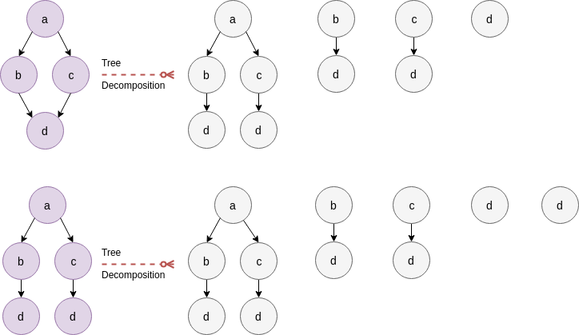

ODD-STh Kernel#
The ODD-STh kernel is a kernel between labeled graphs. Its approach derives from the idea of utilizing tree-based kernels, i.e. kernels that take as input graphs that are trees. Such kernels are in general more computationally efficient as trees are constrained to interesting properties. The idea behind the ODD-STh kernel proposed in [DSMNS12], has to do with decomposition of two graph to ordered DAGs and adding the kernel values between all pairs of DAGs of the original graphs as:
where \(DD(G_{i})\) corresponds to a graph decomposition of this graph and \(K_{DAG}\) is a kernel between DAGs. As a DAG decomposition of each graph they considered the set of all directed BFS explorations starting from each node inside the graph, as follows in the picture:

A simple DAG decomposition of a single graph#
Now in order to move from DAGs to trees each \(K_{DAG}\) kernel was calculated as the sum of tree kernel between derived trees between each of the two DAGs:
where \(T()\) corresponds to the tree-visits on DAGs (which preserve an essence of textit{ordering} as found in ([DSMNS12], section 5.2). An example of such tree visits follows:
{kind=link}

Ordered tree visits on a DAG decomposed from a graph#
\(C()\) is a kernel between trees, where in our case it will be the Sub-Tree Kernel (as found in [VS02]).
Note
Tree isomorphism can be decided in linear time on the sum of the number of nodes and the number of edges
For increasing the efficiency of this algorithm for the new set of DAG decomposition, known as ODD (Ordered Dag Decomposition), an aggregation of all the decomposition in a single DAG was proposed notated as \(BigDAG\). This method introduced in ([ADSMSM06], MinimalDAG: Figure 2, p. 3), aggregates nodes having same labels with frequencies if they correspond to the same path on each DAG, while conserves the existence of nodes that cannot be aggregated.

Construction of a \(BigDAG\) from two DAGs#
Doing so allows as to replace the kernel computation:
with:
where \(f_{u}\) is the frequency counter of the node \(u\) and \(C(u, v)\) is the number of matching proper subtrees from \(u\) and \(v\). An even more abstract idea they followed was to created a \(Big^{2}DAG\) where all the \(BigDAGs\) created from each graph, would be aggregated to a single one, in the same way as in trees, but instead of incrementing frequencies on common nodes a frequency vector of appended frequencies for each DAG, was constructed.

Construction of a \(Big^{2}DAG\) from two \(BigDAGs\)#
In the final \(Big^{2}DAG\) graph, the computation of the kernel matrix is all about calculating the following formula:
which is equivalent to:
because the subtree kernel will have a match only between identical subtrees, that is:
Finally in order to construct the \(Big^{2}DAG\) each vertex would be represented by a tuple containing a unique hash (whose uniqueness has to do with the ordering) a frequency vector and a depth, which where utilized for calculating the kernel value. In order to restrict the size of the produced graphs a parameter \(h\) was introduced which restricts the maximum depth of the BFS exploration when doing the graph decomposition.
The Ordered Dag Decomposition - Sub-Tree \(h\) (ODD-STh) kernel can be found implemented below:
Note
Because the \(Big^{2}DAG\) graph should be preserved through consequent transformations, the cost of copying it may make fit_transform calculation between all the graphs of train and test faster than fitting on train graphs and transforming on test graphs.
Bibliography#
Fabio Aiolli, Giovanni Da San Martino, Alessandro Sperduti, and Alessandro Moschitti. Fast On-line Kernel Learning for Trees. In Proceedings of the 6th International Conference on Data Mining, 787–791. 2006.
Giovanni Da San Martino, Nicolo Navarin, and Alessandro Sperduti. A Tree-Based Kernel for Graphs. In Proceedings of the 2012 SIAM International Conference on Data Mining. 2012.
S.V.N. Vishwanathan and Alexander J. Smola. Fast Kernels for String and Tree Matching. In Proceedings of the 15th International Conference on Neural Information Processing Systems, 585–592. 2002.